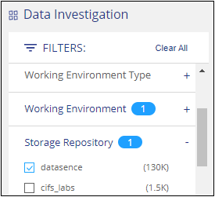
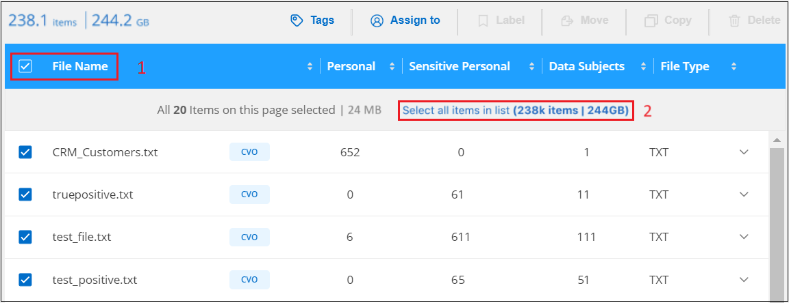
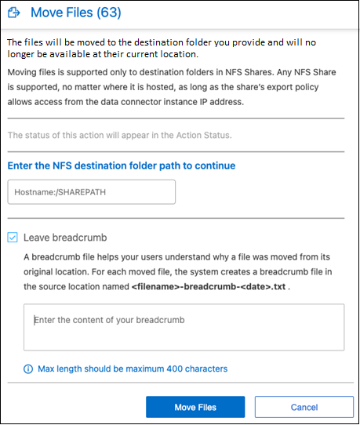

Notes de mise à jour
Notes de mise à jour
Gérez vos données privées
 Suggérer des modifications
Suggérer des modifications
La classification BlueXP offre de nombreuses méthodes pour gérer vos données privées. Certaines fonctionnalités facilitent la préparation de la migration des données, tandis que d'autres vous permettent de modifier ces dernières.
-
Vous pouvez copier des fichiers vers un partage NFS de destination si vous souhaitez effectuer une copie de certaines données et les déplacer vers un autre emplacement NFS.
-
Vous pouvez cloner un volume ONTAP sur un nouveau volume, tout en incluant uniquement les fichiers sélectionnés du volume source dans le nouveau volume cloné. Cette fonction est utile lorsque vous migrez des données et que vous souhaitez exclure certains fichiers du volume d'origine.
-
Vous pouvez copier et synchroniser des fichiers d'un référentiel source vers un répertoire dans un emplacement de destination spécifique. Cette fonction s'avère utile dans les cas où vous migrez des données d'un système source vers un autre alors que les fichiers source continuent à avoir une activité finale.
-
Vous pouvez déplacer les fichiers source numérisés par la classification BlueXP vers n'importe quel partage NFS.
-
Vous pouvez supprimer des fichiers qui semblent non sécurisés ou trop risqués pour l'éviter dans votre système de stockage, ou que vous avez identifiés comme doublons.

|
|
Copier les fichiers source
Vous pouvez copier tous les fichiers source numérisés par la classification BlueXP. Il existe trois types d'opérations de copie en fonction de l'objectif que vous essayez d'effectuer :
-
Copier des fichiers de volumes ou de sources de données identiques ou différentes vers un partage NFS de destination.
Cette fonction est utile pour effectuer une copie de certaines données et les déplacer vers un autre emplacement NFS.
-
Cloner un volume ONTAP sur un nouveau volume dans le même agrégat, mais inclure uniquement les fichiers sélectionnés du volume source dans le nouveau volume cloné.
Cette fonction est utile lorsque vous migrez des données et que vous souhaitez exclure certains fichiers du volume d'origine. Cette action utilise le "NetApp FlexClone ®" fonctionnalité permettant de dupliquer rapidement le volume, puis de supprimer les fichiers que vous avez sélectionnés.
-
Copier et synchroniser des fichiers à partir d'un référentiel source unique (volume ONTAP, compartiment S3, partage NFS, etc.) vers un répertoire dans un emplacement de destination spécifique (cible).
Cette fonction est utile lorsque vous migrez des données d'un système source vers un autre. Après la copie initiale, le service synchronise toutes les données modifiées en fonction de la planification que vous avez définie. Cette action utilise le "Copie et synchronisation NetApp BlueXP" fonctionnalité permettant de copier et de synchroniser les données d'une source vers une cible.
Copier les fichiers source vers un partage NFS
Vous pouvez copier les fichiers source numérisés par la classification BlueXP vers n'importe quel partage NFS. Le partage NFS n'a pas besoin d'être intégré à la classification BlueXP, il vous suffit de connaître le nom du partage NFS où tous les fichiers sélectionnés seront copiés au format <host_name>:/<share_path>.

|
Vous ne pouvez pas copier les fichiers qui résident dans les bases de données. |
-
Vous devez avoir le rôle Administrateur de compte ou Administrateur d'espace de travail pour copier des fichiers.
-
La copie de fichiers nécessite que le partage NFS de destination autorise l'accès à partir de l'instance de classification BlueXP.
-
Vous pouvez copier entre 1 et 100,000 fichiers à la fois.
-
Dans le volet Résultats de l'enquête de données, sélectionnez le ou les fichiers que vous souhaitez copier, puis cliquez sur Copier.

-
Pour sélectionner des fichiers individuels, cochez la case de chaque fichier (
 ).
). -
Pour sélectionner tous les fichiers de la page en cours, cochez la case dans la ligne de titre (
 ).
). -
Pour sélectionner tous les fichiers sur toutes les pages, cochez la case dans la ligne de titre (
), puis dans le message contextuel  , Cliquez sur Sélectionner tous les éléments de la liste (xxx items).
, Cliquez sur Sélectionner tous les éléments de la liste (xxx items).
-
-
Dans la boîte de dialogue Copy Files, sélectionnez l'onglet Regular Copy.

-
Entrez le nom du partage NFS dans lequel tous les fichiers sélectionnés seront copiés au format
<host_name>:/<share_path>, Puis cliquez sur copie.Une boîte de dialogue apparaît avec l'état de l'opération de copie.
Vous pouvez afficher la progression de l'opération de copie dans "Volet État des actions".
Notez que vous pouvez également copier un fichier individuel lors de l'affichage des détails de métadonnées d'un fichier. Cliquez simplement sur Copier fichier.

Cloner des données de volume vers un nouveau volume
Vous pouvez cloner un volume ONTAP existant que la classification BlueXP analyse à l'aide de la fonctionnalité NetApp FlexClone. Cela vous permet de dupliquer le volume rapidement tout en incluant uniquement les fichiers que vous avez sélectionnés. Cela est utile si vous migrez des données et que vous souhaitez exclure certains fichiers du volume d'origine, ou si vous souhaitez créer une copie d'un volume pour le test.
Le nouveau volume est créé dans le même agrégat que le volume source. Assurez-vous de disposer d'un espace suffisant pour ce nouveau volume dans l'agrégat avant de commencer cette tâche. Contactez votre administrateur du stockage si nécessaire.
Remarque : les volumes FlexGroup ne peuvent pas être clonés, car ils ne sont pas pris en charge par FlexClone.
-
Vous devez avoir le rôle Administrateur de compte ou Administrateur d'espace de travail pour copier des fichiers.
-
Vous devez sélectionner au moins 20 fichiers.
-
Tous les fichiers sélectionnés doivent se trouver dans le même volume et le volume doit être en ligne.
-
Le volume doit correspondre à un système Cloud Volumes ONTAP ou ONTAP sur site. Aucune autre source de données n'est actuellement prise en charge.
-
La licence FlexClone doit être installée sur le cluster. Cette licence est installée par défaut sur les systèmes Cloud Volumes ONTAP.
-
Dans le volet enquête de données, créez un filtre en sélectionnant un seul Environnement de travail et un seul référentiel de stockage pour vous assurer que tous les fichiers proviennent du même volume ONTAP.

Appliquez tous les autres filtres afin que vous ne voyez que les fichiers que vous souhaitez cloner vers le nouveau volume.
-
Dans le volet Résultats de l'enquête, sélectionnez les fichiers à cloner et cliquez sur Copier.
-
Pour sélectionner des fichiers individuels, cochez la case de chaque fichier (
). -
Pour sélectionner tous les fichiers de la page en cours, cochez la case dans la ligne de titre (
). -
Pour sélectionner tous les fichiers sur toutes les pages, cochez la case dans la ligne de titre (
), puis dans le message contextuel , Cliquez sur Sélectionner tous les éléments de la liste (xxx items).
-
-
Dans la boîte de dialogue Copy Files, sélectionnez l'onglet FlexClone. Cette page affiche le nombre total de fichiers qui seront clonés à partir du volume (fichiers que vous avez sélectionnés) et le nombre de fichiers qui ne sont pas inclus/supprimés (fichiers que vous n'avez pas sélectionnés) du volume cloné.

-
Entrez le nom du nouveau volume et cliquez sur FlexClone.
Une boîte de dialogue affichant l'état de l'opération de clonage s'affiche.
Le nouveau volume cloné est créé dans le même agrégat que le volume source.
Vous pouvez afficher la progression de l'opération de clonage dans "Volet État des actions".
Si vous avez initialement sélectionné Mapper tous les volumes ou Mapper et classer tous les volumes lorsque vous avez activé la classification BlueXP pour l'environnement de travail où réside le volume source, la classification BlueXP analyse automatiquement le nouveau volume cloné. Si vous n'avez pas utilisé l'une ou l'autre de ces sélections au départ, vous devrez effectuer une acquisition pour ce nouveau volume "activer la numérisation sur le volume manuellement".
Copie et synchronisation des fichiers source sur un système cible
Vous pouvez copier les fichiers source numérisés par la classification BlueXP depuis n'importe quelle source de données non structurées prise en charge vers un répertoire situé dans un emplacement cible spécifique ("Emplacements cibles pris en charge par la copie et la synchronisation BlueXP"). Après la copie initiale, toutes les données modifiées dans les fichiers sont synchronisées en fonction du calendrier que vous configurez.
Cette fonction est utile lorsque vous migrez des données d'un système source vers un autre. Cette action utilise le "Copie et synchronisation NetApp BlueXP" fonctionnalité permettant de copier et de synchroniser les données d'une source vers une cible.
|
|
Vous ne pouvez pas copier et synchroniser les fichiers qui résident dans les bases de données, les comptes OneDrive ou les comptes SharePoint. |
-
Vous devez disposer du rôle Administrateur de compte ou Administrateur d'espace de travail pour copier et synchroniser les fichiers.
-
Vous devez sélectionner au moins 20 fichiers.
-
Tous les fichiers sélectionnés doivent se trouver dans le même référentiel source (volume ONTAP, compartiment S3, partage NFS ou CIFS, etc.).
-
Vous devrez activer le service de copie et de synchronisation BlueXP et configurer au moins un courtier de données pouvant être utilisé pour transférer les fichiers entre les systèmes source et cible. Vérifiez les exigences de copie et de synchronisation BlueXP depuis le "Description de Quick Start".
Notez que le service de copie et de synchronisation BlueXP entraîne des frais de service distincts pour vos relations synchronisées et des frais de ressources si vous déployez le courtier en données dans le cloud.
-
Dans le volet investigation de données, créez un filtre en sélectionnant un seul Environnement de travail et un seul référentiel de stockage pour vous assurer que tous les fichiers proviennent du même référentiel.
Appliquez tous les autres filtres de sorte que vous ne voyez que les fichiers que vous voulez copier et synchroniser vers le système de destination.
-
Dans le volet Résultats de l'enquête, sélectionnez tous les fichiers sur toutes les pages en cochant la case dans la ligne de titre (
), puis dans le message contextuel Cliquez sur Sélectionner tous les éléments de la liste (xxx items), puis sur Copier.
-
Dans la boîte de dialogue Copy Files, sélectionnez l'onglet Sync.

-
Si vous êtes sûr de vouloir synchroniser les fichiers sélectionnés vers un emplacement de destination, cliquez sur OK.
La copie et l'interface de synchronisation BlueXP sont ouvertes dans BlueXP.
Vous êtes invité à définir la relation de synchronisation. Le système source est pré-rempli en fonction du référentiel et des fichiers que vous avez déjà sélectionnés dans la classification BlueXP.
-
Vous devez sélectionner le système cible, puis sélectionner (ou créer) le courtier de données que vous prévoyez d'utiliser. Vérifiez les exigences de copie et de synchronisation BlueXP depuis le "Description de Quick Start".
Les fichiers sont copiés sur le système cible et ils seront synchronisés en fonction du planning que vous définissez. Si vous sélectionnez une synchronisation unique, les fichiers sont copiés et synchronisés une seule fois. Si vous choisissez une synchronisation périodique, les fichiers sont synchronisés en fonction du planning. Notez que si le système source ajoute de nouveaux fichiers qui correspondent à la requête que vous avez créée à l'aide de filtres, ces nouveaux fichiers seront copiés vers la destination et synchronisés ultérieurement.
Notez que certaines des opérations habituelles de copie et de synchronisation BlueXP sont désactivées lorsqu'elles sont invoquées à partir de la classification BlueXP :
-
Vous ne pouvez pas utiliser les boutons Supprimer les fichiers sur la source ou Supprimer les fichiers sur la cible.
-
L'exécution d'un rapport est désactivée.
Déplacer les fichiers source vers un partage NFS
Vous pouvez déplacer les fichiers source numérisés par la classification BlueXP vers n'importe quel partage NFS. Le partage NFS n'a pas besoin d'être intégré à la classification BlueXP.
Vous pouvez également laisser un fichier de navigation à l'emplacement du fichier déplacé. Un fichier de navigation permet à vos utilisateurs de comprendre pourquoi un fichier a été déplacé de son emplacement d'origine. Pour chaque fichier déplacé, le système crée un fichier de navigation à l'emplacement source nommé <filename>-breadcrumb-<date>.txt. Vous pouvez ajouter du texte dans la boîte de dialogue qui sera ajoutée au fichier de navigation pour indiquer l'emplacement où le fichier a été déplacé et l'utilisateur qui a déplacé le fichier.
Notez que la structure de sous-répertoires du fichier source est recréée sur le partage de destination lorsque le fichier est déplacé, de sorte qu'il est plus facile de comprendre l'emplacement d'où le fichier a été déplacé. Si un fichier du même nom existe dans l'emplacement de destination, le fichier ne sera pas déplacé.
|
|
Vous ne pouvez pas déplacer les fichiers qui résident dans les bases de données. |
-
Vous devez avoir le rôle Administrateur de compte ou Administrateur d'espace de travail pour déplacer des fichiers.
-
Les fichiers source peuvent se trouver dans les sources de données suivantes : systèmes ONTAP sur site, Cloud Volumes ONTAP, Azure NetApp Files, partages de fichiers et SharePoint Online.
-
Vous pouvez déplacer jusqu'à 15 millions de fichiers à la fois.
-
Seuls les fichiers de 50 Mo ou moins sont déplacés.
-
Le partage NFS de destination doit autoriser l'accès à partir de l'adresse IP de l'instance de classification BlueXP.
-
Dans le volet Résultats de l'enquête de données, sélectionnez le ou les fichiers que vous souhaitez déplacer.

-
Pour sélectionner des fichiers individuels, cochez la case de chaque fichier (
). -
Pour sélectionner tous les fichiers de la page en cours, cochez la case dans la ligne de titre (
). -
Pour sélectionner tous les fichiers sur toutes les pages, cochez la case dans la ligne de titre (
), puis dans le message contextuel , Cliquez sur Sélectionner tous les éléments de la liste (xxx items).
-
-
Dans la barre de boutons, cliquez sur déplacer.

-
Dans la boîte de dialogue Move Files, entrez le nom du partage NFS dans lequel tous les fichiers sélectionnés seront déplacés au format
<host_name>:/<share_path>. -
Si vous voulez laisser un fichier de navigation, cochez la case laisser fil fil fil fil fil à fil. Vous pouvez entrer du texte dans la boîte de dialogue pour indiquer l'emplacement où le fichier a été déplacé et l'utilisateur qui a déplacé le fichier, ainsi que toute autre information, comme la raison pour laquelle le fichier a été déplacé.
-
Cliquez sur déplacer les fichiers.
Notez que vous pouvez également déplacer un fichier individuel lors de l'affichage des détails de métadonnées d'un fichier. Cliquez simplement sur déplacer le fichier.

Supprimer les fichiers source
Vous pouvez supprimer de manière définitive les fichiers source qui semblent non sécurisés ou trop risqués pour laisser dans votre système de stockage, ou que vous avez identifiés comme un doublon. Cette action est permanente et il n'y a pas d'annulation ou de restauration.
Vous pouvez supprimer des fichiers manuellement à partir du volet Investigation, ou "Utiliser automatiquement des règles".
|
|
Vous ne pouvez pas supprimer les fichiers qui résident dans les bases de données. Toutes les autres sources de données sont prises en charge. |
La suppression de fichiers nécessite les autorisations suivantes :
-
Pour les données NFS : il est nécessaire de définir la export policy avec les autorisations d'écriture.
-
Pour les données CIFS, les identifiants CIFS doivent disposer d'autorisations d'écriture.
-
Pour les données S3, le rôle IAM doit inclure les autorisations suivantes :
s3:DeleteObject.
Supprimez les fichiers source manuellement
-
Vous devez avoir le rôle Administrateur de compte ou Administrateur d'espace de travail pour supprimer des fichiers.
-
Vous pouvez supprimer un maximum de 100,000 fichiers à la fois.
-
Dans le volet Résultats de l'enquête de données, sélectionnez le ou les fichiers que vous souhaitez supprimer.

-
Pour sélectionner des fichiers individuels, cochez la case de chaque fichier (
). -
Pour sélectionner tous les fichiers de la page en cours, cochez la case dans la ligne de titre (
). -
Pour sélectionner tous les fichiers sur toutes les pages, cochez la case dans la ligne de titre (
), puis dans le message contextuel , Cliquez sur Sélectionner tous les éléments de la liste (xxx items).
-
-
Dans la barre de boutons, cliquez sur Supprimer.
-
Comme l'opération de suppression est permanente, vous devez taper "définitivement delete" dans la boîte de dialogue Delete File suivante et cliquer sur Delete File.
Vous pouvez afficher la progression de l'opération de suppression dans "Volet État des actions".
Notez que vous pouvez également supprimer un fichier individuel lors de l'affichage des détails de métadonnées d'un fichier. Cliquez simplement sur Supprimer le fichier.